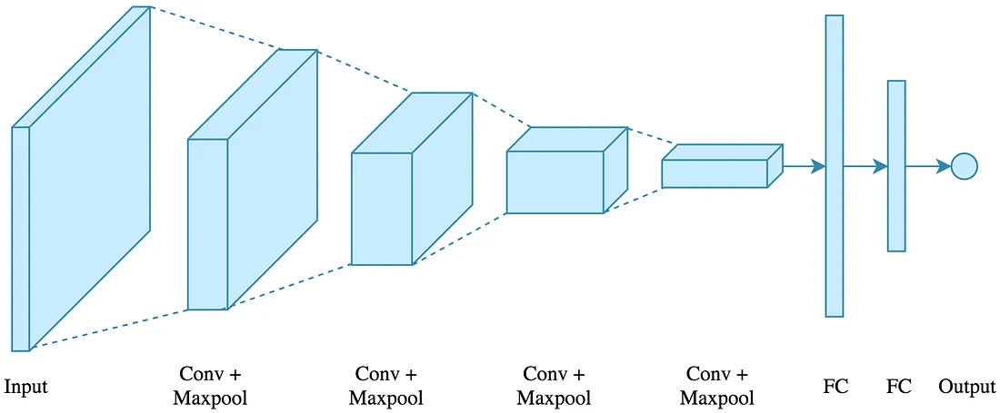
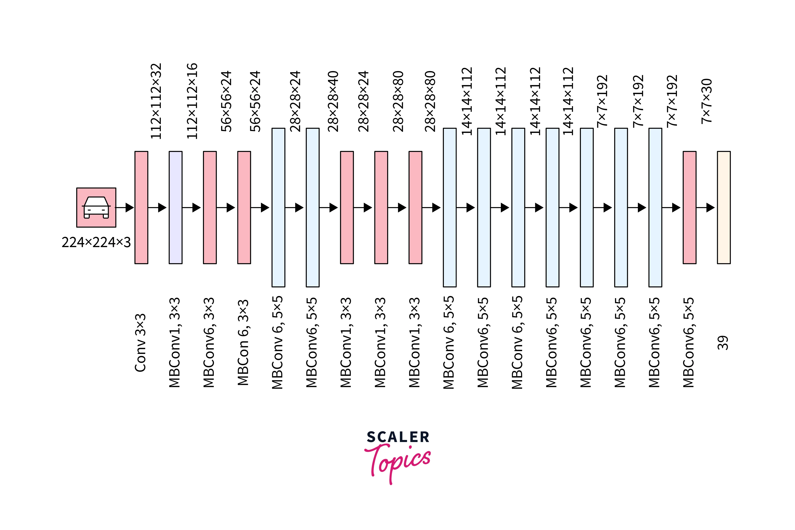
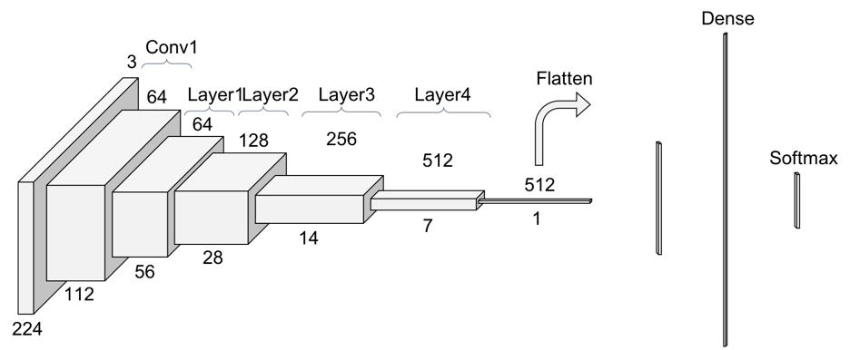

A Convolutional Neural Network, also known as CNN or ConvNet, is a class of neural networks that specializes in processing data that has a grid-like topology, such as an image. A digital image is a binary representation of visual data. It contains a series of pixels arranged in a grid-like fashion that contains pixel values to denote how bright and what color each pixel should be.

The MBConv layer is a fundamental building block of the EfficientNet architecture. It is inspired by the inverted residual blocks from MobileNetV2 but with some modifications. The MBConv layer starts with a depth-wise convolution, followed by a point-wise convolution (1x1 convolution) that expands the number of channels, and finally, another 1x1 convolution that reduces the channels back to the original number. This bottleneck design allows the model to learn efficiently while maintaining a high degree of representational power. In addition to MBConv layers, EfficientNet incorporates the SE block, which helps the model learn to focus on essential features and suppress less relevant ones. The SE block uses global average pooling to reduce the spatial dimensions of the feature map to a single channel, followed by two fully connected layers. These layers allow the model to learn channel-wise feature dependencies and create attention weights that are multiplied with the original feature map, emphasizing important information.

A typical ResNet architecture consists of several stacked “residual blocks.” Each block has a
shortcut or skip connection that bypasses one or more layers. In a basic residual block, the input
is added to the output of the stacked layers (after appropriate dimension matching, if necessary).
This design allows the network to learn an identity function, ensuring that the deeper model is no
worse than its shallower counterpart.
Residual Neural Networks represent a cornerstone in the evolution of deep learning architectures.
Their introduction has not only solved the pressing issue of training very deep networks but has
also set a precedent for future architectural innovations in the field. As deep learning continues
to evolve, the principles laid down by ResNets will undoubtedly continue to influence the
development of more advanced and efficient models.